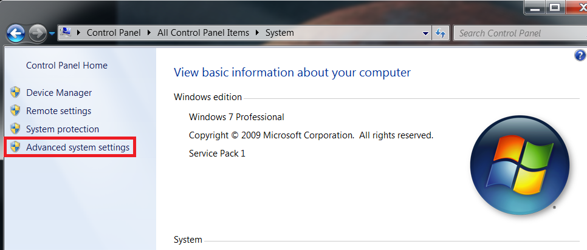
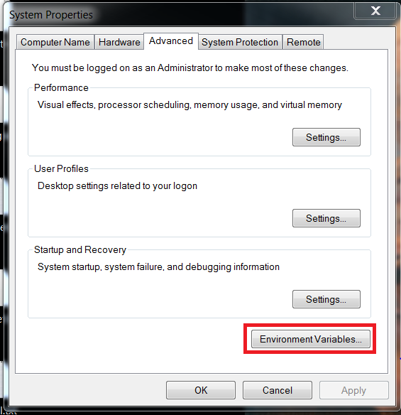
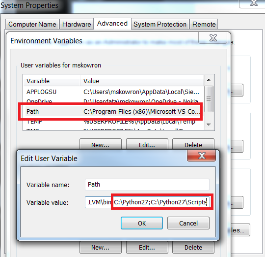

Sphinx Tool Installation¶
PlantUML requires java runtime environment installed. If you don’t have already Java Runtime Environment installed on your computer, you can download if from http://www.oracle.com/technetwork/java/javase/downloads/jre8-downloads-2133155.html
Windows¶
Download latest Python 2.7 https://www.python.org/downloads/windows/
Install Python.
Add Python and Python Scripts directories to Windows PATH variable.
Open Control Panel -> System -> Advanced system settings
Click on “Environment Variables” button.
Add C:\Python27 and C:\Python27\Scripts to PATH variable.

Execute following commands.
pip install sphinx --proxy http://defra1c-proxy.emea.nsn-net.net:8080 pip install plantuml --proxy http://defra1c-proxy.emea.nsn-net.net:8080 pip install sphinxcontrib-plantuml --proxy http://defra1c-proxy.emea.nsn-net.net:8080
Linux (LinSee server)¶
To install all dependencies:
Checkout https://wrscmi.inside.nsn.com/isource/svnroot/BTS_DOCS_SMALLCELLS/trunk
Install sphinx & dependencies.
pip install --user sphinx pip install --user plantuml pip install --user sphinxcontrib-plantuml
Execute script from trunk directory
./init_linux.sh
Linux¶
Install Python
sudo apt-get install python2.7
Install sphinx & dependencies.
pip install sphinx pip install plantuml pip install sphinxcontrib-plantuml